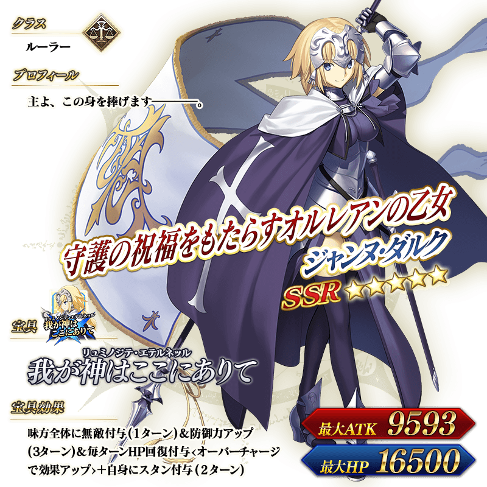

◆オルレアンピックアップ召喚期間◆
期間：2015年10月14日(水) 16:00 ～ 10月21日(水) 13:59
味方全体に無敵効果を与える強力な宝具を持つサーヴァント「★5（SSR）ジャンヌ・ダルク」をはじめ、ピックアップサーヴァント5騎の出現確率がアップ！
10回召喚では★4（SR）以上1枚確定と★3（R）以上のサーヴァント1騎確定！
※★4（SR）以上確定にはサーヴァントと概念礼装が含まれます。
◆ピックアップサーヴァント◆
★★★★★SSR ルーラー
ジャンヌ・ダルク
MAX ATK 9593 MAX HP 16500宝具 我が神はここにありて（リュミノジテ・エテルネッル）
★★★★SR セイバー
ジークフリート
MAX ATK 8181 MAX HP 14165宝具 幻想大剣・天魔失墜（バルムンク）
★★★★SR セイバー
シュヴァリエ・デオン
MAX ATK 8765 MAX HP 13256宝具 百合の花咲く豪華絢爛（フルール・ド・リス）
★★★R セイバー
ジル・ド・レェ
MAX ATK 6615 MAX HP 10498宝具 神聖たる旗に集いて吼えよ（セイント・ウォーオーダー）
★★★R バーサーカー
清姫
MAX ATK 6644 MAX HP9166宝具 転身火生三昧（てんしんかしょうざんまい）
